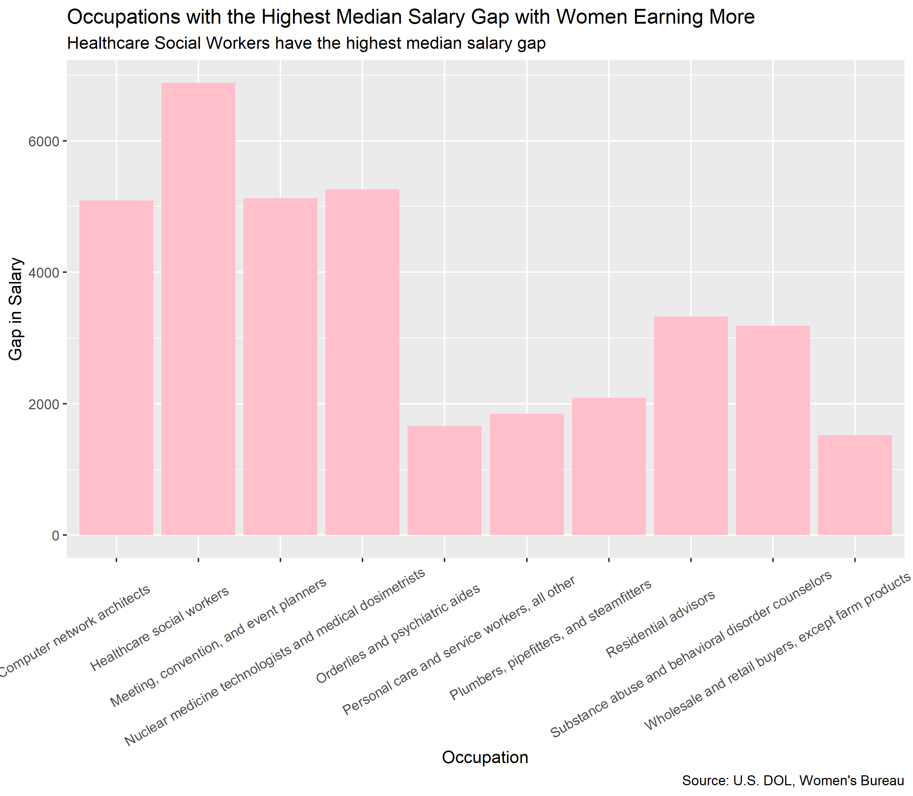
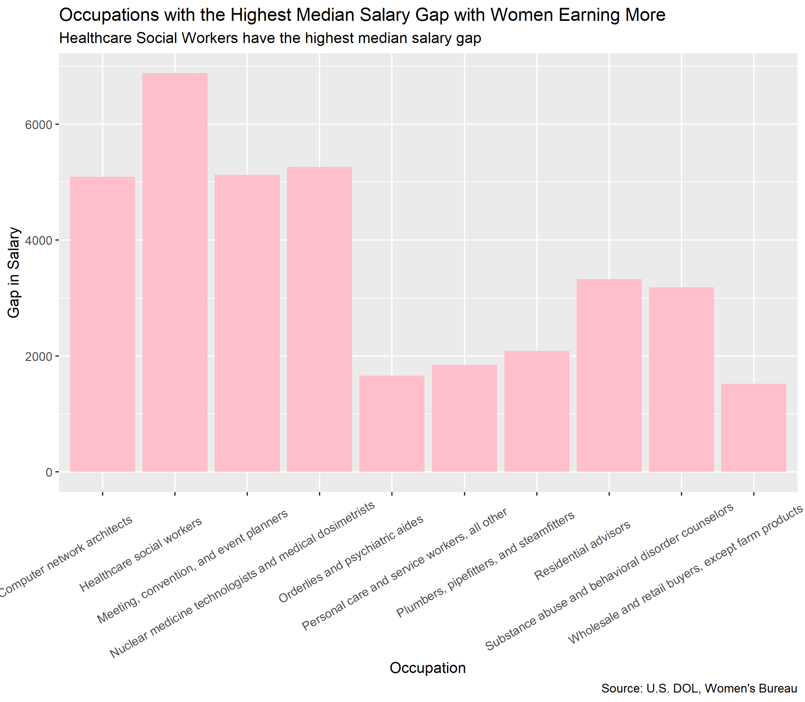

Occupations with the Highest Salaries for Women and Men


Occupations with the Highest Median Salary Gap

Women earn more than men on average in only 19 careers out of 353. That equates to only 5.38 %.
This is where I will describe my final project.
Occupations with the Highest Salaries for Women and Men
Occupations with the Highest Median Salary Gap

Women earn more than men on average in only 19 careers out of 353. That equates to only 5.38 %.